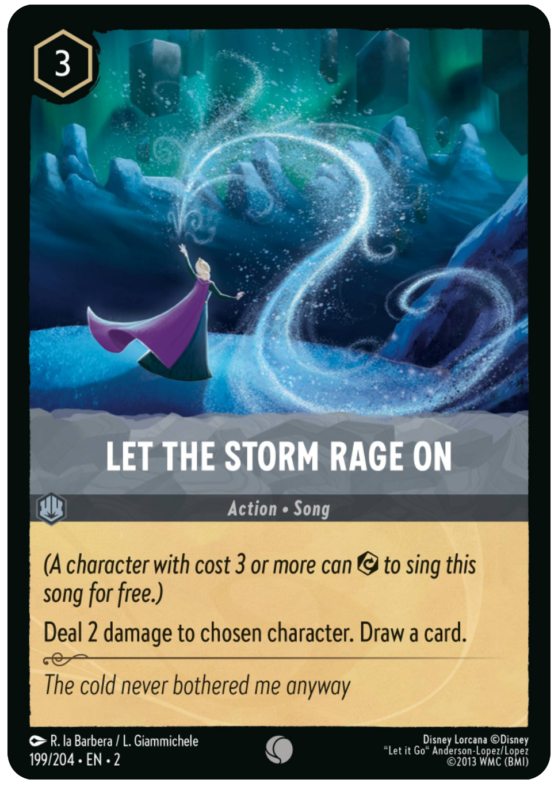

Meta Decks - The most powerful (and most common) decks of the format
The term "metagame" refers to the strategies, knowledge, and practices that exist alongside the exisiting rules of the game and influence the strategies and decisions being made. Understanding the "meta" of your local tournament means you have a good idea of what types of decks people like to play and the strategies you need to prepare against if you want to do well.
For example, if you know that half the people attending are likely going to play early singers like Cinderella - Ballroom Sensation with Let the Storm Rage On to damage your characters, that is probably not a good tournament for you to try an aggro deck with lots of cheap weak willpower characters. Knowing that so many people will have lots of songs in their decks means decks that include Ursula - Deceiver could be very successful though.
The better you understand your meta the easier it will be for you to prepare a successful deck. What deck you decide to play is extremely important, as there are some decks that will have extremely one-sided matchups against certain decks that "counter" them. Often the top meta decks played by professionals are built with the mentality of trying to "go even" or better into as many other decks as possible.
This idea of trying to go even into everything is because a lot of professional players would rather play a deck that has a 50% chance of winning against any deck than play a deck that has a 90% chance to beat one strategy but only a 20% chance of winning against another, unless they are extremely confident that hardly anyone is playing the deck that will almost always beat them. With 50/50 odds of winning the victor is decided more by skill and good decision-making rather than winning or losing in deck choice.
Once you have your 50/50 odds deck you can add in "tech cards", cards that specifically improve certain matchups, to try and get a better chance against the decks you expect to be most common without lowering your odds too much against everything else.
What are the meta decks for Reign of Jafar?
The short answer is - we don't know yet. The set has just come out, but a safe bet will be that many of the previous top decks stay strong while a few new ones rise up to see success as well. Given the current excitement around certain cards on the internet some early decks to watch out for would be Amber/Steel Steelsong, Amber/Emerald Chernadogs, and some new varient of Ruby/Sapphire Shark Control.
Tech Cards
Benja - Guardian of the Dragon Gem is a great tech card if you know you will be playing against a lot of item decks. Part of why he is such a good option though is because he does more than just banishing an item. As a character he is still able to quest and challenge even if they don't have an item to banish, and he is inkable so you don't have to worry about it ever being stuck in your hand with no use.